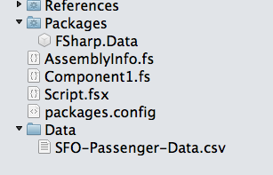

Duration
20 minutes
Goals
The goal of this lab is to utilize active patterns to calculate which airline had the lowest domestic arrival counts (deplaning) in SFO for December of every year.
- Create an F# library project and open the script.fsx file.
- Connect to the FSharp.Data type provider and read in a provided .csv file with all the data.
- Create a partial active pattern to separate December activity.
- Create a partial active pattern to find deplaning activity.
Steps
Connect to the type provider
One of the unique aspects of F# is how it is capable of manipulating external data. This is done through a type provider which we will cover in in the next F# course, however we will use a type provider here to give you a taste of the power available.
- Create a new library application and open script.fsx.
- Create a Data folder in your project, and add the SFO-Passenger-Data.csv file from the Exercise 5 folder that was provided with the course materials to that folder. Make sure to select Copy if you are using Visual Studio for Mac and it prompts you to add the file to the folder.
- You can open the data file and examine the contents - it's a comma-separated data file which looks like this:
- Add the FSharp.Data NuGet package to your project. This is done by right-clicking on the project and selecting Add > Packages in Visual Studio for Mac, or right-clicking on the References folder and selecting Manage Nuget Packages in Visual Studio. Type "FSharp.Data" into the search box and select the appropriate DLL from the dialog as shown below.
-
Add a reference to the DLL with the following code at the top of your script file - note that the path needs to be verified in case the version has changed or it's been placed in a slightly different location.
Make sure to note the version number of F# Data when you download it and update the path if necessary.
#r "./packages/FSharp.Data.2.2.3/lib/net40/FSharp.Data.dll" open FSharp.Data
-
We are going to use a type provider to load the .CSV file and explore it. Copy and paste the text below to connect to the CSVProvider and pull all the data into a list.
let SFOFile = new CsvProvider<"Data/SFO-Passenger-Data.csv">() let SFOData = SFOFile.Rows |> Seq.toList
- Once you have performed these steps, your solution should look something like: 
Activity Period,Operating Airline,Operating Airline IATA Code,Published ... 200801,Aer Lingus,EI,Aer Lingus,EI,International,Europe,Deplaned,Other,International,A,2858 200801,Aer Lingus,EI,Aer Lingus,EI,International,Europe,Enplaned,Other,International,A,2716 200801,Air Canada ,AC,Air Canada ,AC,International,Canada,Deplaned,Other,Terminal 3,E,19756

Utilize active patterns
Next we will create two partial active pattern functions to partition the data in the CSV file. In each of the steps below, don't worry about separating out the comma-delimited values, the type provider will do most of that for us. Assume that the input to each of the active pattern match functions is just the column in question.
- Let's start with the December activity period. Remember that when you create a partial active pattern, you will need to use an option type because not all the data is matched.
-
We want to look for any data where the input string ends with "12". All other data should be ignored. The activity period is in the form DDMMYY so we only need to look at the final two characters - an easy what to do that is through the
string.EndsWithmethod.- Hint: try turning the input into a
stringto get access to that method
- Hint: try turning the input into a
- Next, create a partial active pattern to find deplaning numbers. If you look at the data file, we will be looking for the text "Deplaned".
- Next, lets uses these two defined patterns to partition the lists to get the correct data. We first want all the flights that happened in December, then from that list we want all the flights which were deplaned.
- Use the following code to pull the data out from the type provider:
-
Since this is the first time we've used the type provider, examine the syntax being used. The CSV type provider exposes the data through fields on an object generated from each row of the file - remember we turned it all into a list earlier. Since the column names have spaces, we need to use the double-single-quote to escape the property name - for example
x.``Activity Period``andx.``Activity Type Code``. - Using the
decemberDeplanedlist, find the minimum passenger count. The field you are looking for from the type provider is``Passenger Count``.
let december, other =
SFOData
|> List.partition (fun x -> match x.``Activity Period`` with
| December -> true
| _ -> false)
let decemberDeplaned, other2 =
december
|> List.partition (fun x -> match x.``Activity Type Code`` with
| Deplaning -> true
| _ -> false)
- Next, show the Operating Airline column for your result.
- Select all the code in the script file and press CTRL+ENTER to run the code in the REPL, you should get Servisair.
Summary
In this lab we have applied active partial patterns to data from a type provider to find out which airlines had the minimum passenger counts for December.